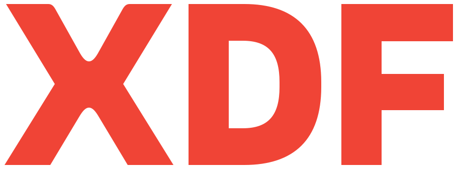
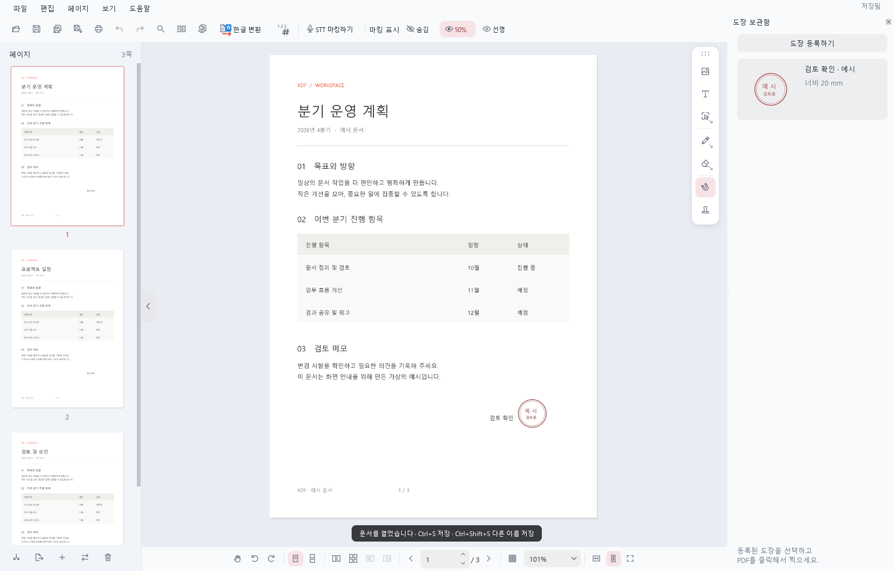
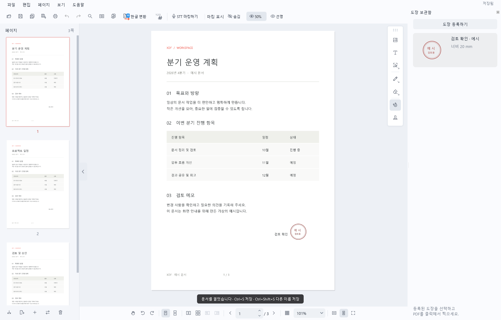

기존
넓은 X, 부풀어 오른 끝부분, 붙어 보이는 글자 간격.
기존 주홍 · 분홍 · 푸른 회색
디자인 비교 시안 · 2026.10.13
로고의 부풀어 오른 곡선과 넓은 비례를 줄이고, 화면의 색과 모서리를 정돈하고, 화이트는 아주 옅은 쿨톤으로 맞췄습니다. 익숙한 문서 도구의 명료함을 기준으로 잡은 방향입니다.
기존
넓은 X, 부풀어 오른 끝부분, 붙어 보이는 글자 간격.
적용안

폭과 굵기를 줄이고, 글자 사이를 열고, 획의 끝을 평평하게.
기존

선택 상태에 분홍색을 사용하고, 버튼과 도구함의 모서리가 둥급니다.
적용안

선택 상태는 쿨톤 회색으로, 시그니처 주홍색은 유지하고 모서리와 그림자는 더 작게.
현재 문구
읽고, 쓰고, 도장을 찍고.
문서를 마무리하는 일에만 집중하세요.
제안 문구
필기, 페이지 정리, 도장과 문서 비교.
PDF를 열어 필요한 작업을 마무리하세요.